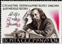
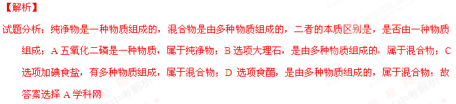
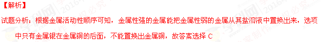

2016年北京市中考化学真题 · 选择题 第1、2、3、4、5题 · 对应解析
1．通过实验测定了空气组成的科学家是
 | |||
A．门捷列夫 | B．达尔文 | C．拉瓦锡 | D．牛顿 |
【答案】C
【解析】
试题分析：通过实验测定了空气组成的科学家是拉瓦锡，故答案选择C
考点：空气成分的测定
2．下列属于纯净物的是
A．五氧化二磷B．大理石C．加碘食盐D．食醋
【答案】A

考点：物质的分类3．下列元素中，人体摄入量过低会引起贫血的是
A．FeB．ZnC．NaD．Ca
【答案】A
【解析】
试题分析：人体摄入量过低会引起贫血的是铁元素，故答案选择A
考点：化学元素与人体健康
4．下列金属中，不能从CuSO4溶液中置换出Cu的是
A．ZnB．AlC．AgD．Fe
【答案】C

考点：金属活动性顺序[来源:Zxxk.Com]5．铜能被加工成厚度仅为7微米的超博铜箔，说明铜具有良好的
A．导电性B．延展性C．导热性D．抗腐蚀性
【答案】B
【解析】
试题分析：铜能被加工成厚度仅为7微米的超博铜箔，说明铜具有良 好的延展性，故答案选择B
好的延展性，故答案选择B
考点：金属的性质